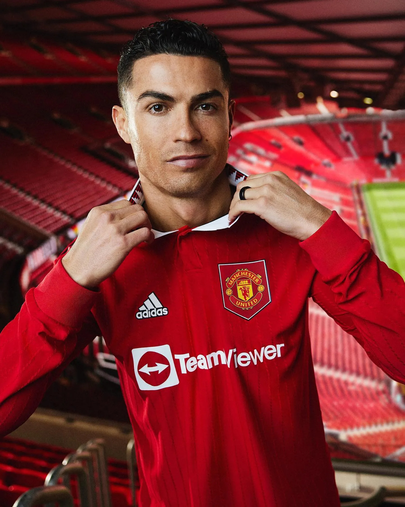
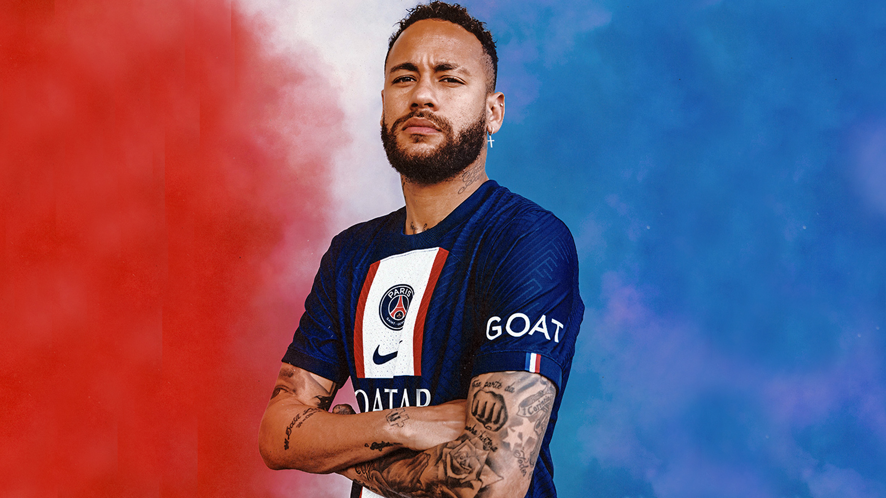
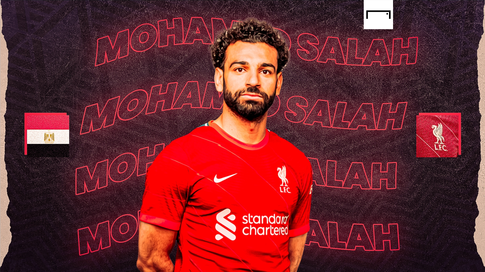
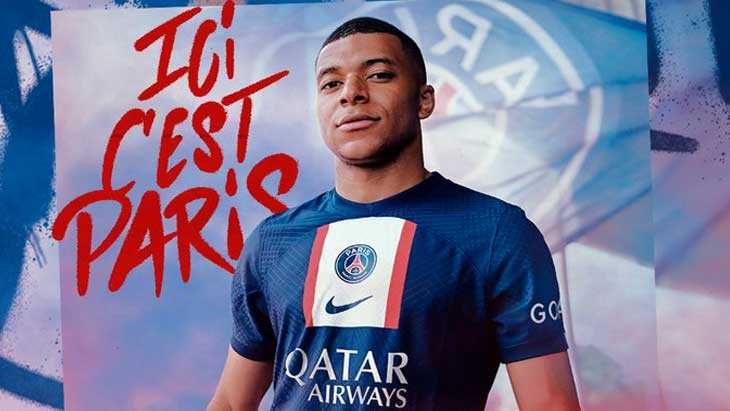
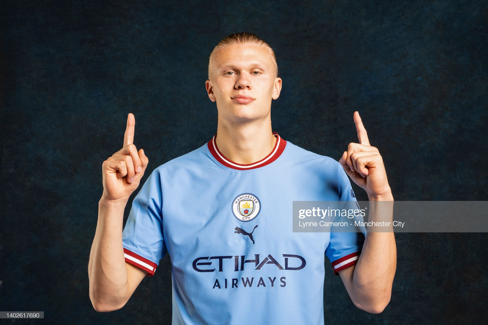

|
Lionel Andrés Messi (born 24 June 1987), also known as Leo Messi, is an Argentine professional footballer who plays as a forward for Ligue 1 club
Paris Saint-Germain and captains the Argentina national team. Often considered the best player in the world
and widely regarded as one of the greatest players of all time, Messi has won a record seven Ballon d'Or awards, a record six European Golden Shoes,
and in 2020 was named to the Ballon d'Or Dream Team.
|
|
Cristiano Ronaldo dos Santos Aveiro (born 5 February 1985) is a Portuguese professional footballer who plays as a
forward for Premier League club Manchester United and captains the Portugal national team. Often considered the best player in the world
and widely regarded as one of the greatest players of all time, Ronaldo has won five Ballon d'Or awards and four European Golden Shoes,
the most by a European player.
|

|
|
Neymar da Silva Santos Júnior (born 5 February 1992), known as Neymar,
is a Brazilian professional footballer who plays as a winger for Ligue 1 club Paris Saint-Germain
and the Brazil national team. He is considered a versatile player, being able to play as either a central striker,
second striker, winger or occasionally as an attacking midfielder.A prolific goalscorer and renowned playmaker,
he is regarded as one of the best players in the world.
|

|
Mohamed Salah Hamed Mahrous Ghaly (born 15 June 1992) is an Egyptian professional footballer who plays as a forward or on the right wing for Premier League club Liverpool
and captains the Egypt national team. Considered one of the best players in the world and amongst the greatest African players of all time,
he is known for his finishing, dribbling, and speed.
|

|
|
Kylian Mbappé Lottin (born 20 December 1998) is a French professional footballer
who plays as a forward for Ligue 1 club Paris Saint-Germain and the France national team.
Considered one of the best players in the world, and reportedly the highest-paid,
Mbappé is renowned for his dribbling abilities, exceptional speed, and finishing
|

|
Erling Braut Haaland (born 21 July 2000) is a Norwegian professional footballer
who plays as a striker for Premier League club Manchester City and the Norway national team.
Considered one of the best players in the world, he is known for his athleticism, speed, and finishing.
Haaland won several individual awards and broke various records during his career.
|

|